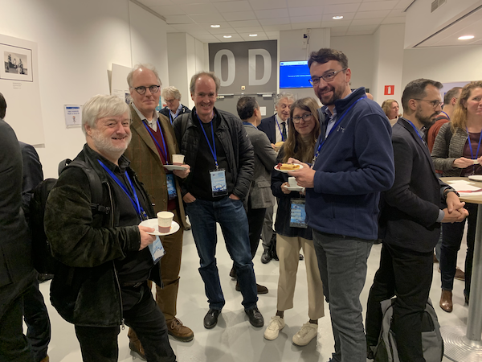

Apache NetBeans
Apache NetBeansLatest release
Apache NetBeans Blog
Thursday June 01, 2023
The Apache NetBeans team is pleased to announce that Apache NetBeans 18 was released on May 30, 2023.
What’s in the Apache NetBeans 18 release:
With thanks to 31 contributors, including 5 who have contributed for the first time. Thank you!
Downloads:
See our release schedule:
Feel free to share the good news!
Thanks everyone, and best wishes,
Neil, Eric, Martin, Geertjan
on behalf of Apache NetBeans PMC
Tuesday February 21, 2023
The Apache NetBeans team is pleased to announce that Apache NetBeans 17 was released on February 21, 2023.
What’s in the Apache NetBeans 17 release:
With thanks to 36 contributors, including 7 who have contributed for the first time. Thank you!
Downloads:
See our release schedule:
Feel free to share the good news!
Thanks everyone, and best wishes,
Neil, Eric, Martin, Geertjan
on behalf of Apache NetBeans PMC
Thursday December 15, 2022
The Apache NetBeans team is pleased to announce that Apache NetBeans 16 was released on November 30, 2022 (though there’s been a delay in announcing the release).
What’s in the Apache NetBeans 16 release:
With thanks to 26 contributors, including some who have contributed for the first time. Thank you!
Downloads:
See our release schedule:
Feel free to share the good news!
Thanks everyone, and best wishes,
Neil, Eric, Martin, Geertjan
on behalf of Apache NetBeans PMC
Saturday December 03, 2022
As part of being involved in Apache, I got the opportunity yesterday to go to Brussels to attend the European Commission’s EC Open Source Workshops - Computing and Sustainability.
Me and The EU
Aside from my many years of involvement in the context of open source, in particular in the context of Apache NetBeans and the Friends of OpenJDK, I recently completed my LL.M Masters of Law at the University of Amsterdam in European Union Law (25 years after completing my LL.B Bachelor of Law in South Africa) especially because, aside from the academic side of it, I wanted to finally understand how the EU actually works, with all its institutions, etc, and, though I can’t say I really have a full grasp on it all yet (I doubt anyone really does), it was quite moving to be at one of the key pillars of that institution yesterday.

To describe all the discussions that took place would be impossible, since I could only physically attend a few of them because many happened in parallel, it was great to meet several people I knew already from real life and virtually, such as Simon Phipps, Dirk van Gulik, Roman Shaposhnik, and Jarek Potiuk, as well as many other new people, there were just too many, from all different organizations, NGOs, local administrations, governments, etc, from within the EU and beyond.

Each workshop consisted of a panel that kicked off discussions, with participants in the room being able to participate, ending with voting on the most important topics to carry forward and recommend to the European Commission.

Themes
A key theme in the workshops I was in was the disconnect and misunderstandings between the public sector and industries on one side and open source on the other.
There have been many advances made in the sense that open source is now everywhere, though it is not everywhere in a balanced way nor supported and sustainable to the extent that is could or should be.
I keep seeing an image of the lone maintainer of an open source project in front of me, late at night, hacking away at code all for free that large enterprises and companies around the world simply consume and sell as part of their products. Not only is that an insecure and unsustainable situation there are clear moral and ethical aspects connected to that as well.
Carrot and Stick
Clearly there was quite some support for compelling the industry to make public its dependencies on open source, i.e., be compelled to list on their websites which open source technologies they’re using, how they are contributing back to those projects (and other open source projects), be compelled to push their changes upstream, and expose/explain what they are doing to enable their developers, in terms of time and money, to contribute to open source projects that those companies have integrated in one way or another.
A separate idea, not following the legal compliance road, would be some kind of fair trade accreditation scheme whereby a company would need to comply with certain standards, e.g., the above list for example, in order to get accredited with some level of FOSS fair trade certification, which would be a helpful way for FOSS-aware developers to make the right choices when looking for employment.
There is simply so much work in IT nowadays that, in fact, companies are now being interviewed by developers rather than the other way around, and one of the questions asked by a developer would be: "What is your FOSS Fair Trade Accreditation level?"
I’d love to be in a world where that question is asked and, though we’d need to be wary of bad actors and have some kind of mechanism for accreditation, and though it may not solve everything (that would be an unfair standard for any solution), it would certainly be a step forward.
Monday October 24, 2022
A group of Java engineers gathered in a pub in Prague last night to celebrate many years of their engagement in NetBeans, all having worked in Sun Microsystems or Oracle or both, continuing into the Apache world where NetBeans is now found.
This will not be the last of such gatherings, anyone involved in NetBeans over the years is more than welcome to attend or set up similar get togethers, ideally in a pub, which is also where NetBeans started.
Wednesday September 07, 2022
The Apache NetBeans team is pleased to announce that Apache NetBeans 15 was released on August 31, 2022 (though there’s been a delay in announcing the release).
What’s in the Apache NetBeans 15 release:
With thanks to 33 contributors, including some who have contributed for the first time. Thank you!
Downloads:
See our release schedule:
Feel free to share the good news!
Thanks everyone, and best wishes,
Neil, Eric, Geertjan
on behalf of Apache NetBeans PMC
Friday June 17, 2022
The Apache NetBeans team is pleased to announce that Apache NetBeans 14 was released on June 9, 2022 (though there’s been a delay in announcing the release).
What’s in the Apache NetBeans 14 release:
Note it’s the first time we’re doing a generated changelog like the above, next time it will be even better, we’ll work on generating different sections and highlights, to make it easier to read through.
Downloads:
See our release schedule:
Feel free to share the good news!
Thanks everyone, and best wishes,
Neil, Eric, Geertjan
on behalf of Apache NetBeans PMC
Friday March 04, 2022
The Apache NetBeans team is pleased to announce that Apache NetBeans 13 is released today on March 4, 2022. Apache NetBeans is a full IDE for Java SE, Java EE, PHP, JavaScript, HTML5 and more, including some support for Groovy and C/C++.
Our schedule is publicly available here:
New & noteworthy features of the 13 release:
Downloads:
Feel free to share the good news!
Thanks everyone, and best wishes,
Neil, Eric, and Geertjan
Release Manager for Apache NetBeans 13
on behalf of Apache NetBeans PMC
Tuesday January 04, 2022
Log4j v2 is not a direct component of Apache NetBeans or a dependency of any current component. The Apache NetBeans PMC has studied earlier versions to see if there is any other risk. We do not believe any vulnerability in Log4j v1 is exploitable in Apache NetBeans IDE.
Apache NetBeans Platform developers, i.e., those creating applications on top of Apache NetBeans, should make their own assessment.
If you are aware of any issue, please follow the guidelines at https://www.apache.org/security.
Monday December 06, 2021
The Apache NetBeans team is pleased to announce that Apache NetBeans 12.6 was released on November 29th 2021. Apache NetBeans is a full IDE for Java SE, Java EE, PHP, JavaScript, HTML5 and more, including some support for Groovy and C/C++.
Our schedule is publicly available here:
New & noteworthy features of the 12.6 release:
Downloads:
Feel free to share the good news!
Thanks everyone, and best wishes,
Neil and Geertjan
Release Manager for Apache NetBeans 12.6
on behalf of Apache NetBeans PMC
Tuesday September 21, 2021
The Apache NetBeans team is pleased to announce that Apache NetBeans 12.5 was released on September 13th 2021 [1]. Apache NetBeans is a full IDE for Java SE, Java EE, PHP, JavaScript, HTML5 and more, including some support for Groovy and C/C++.
Apache NetBeans 12.5 is a quarterly feature update. The LTS release of the current cycle is Apache NetBeans 12.0. The 12.5 release has not been as heavily tested as the LTS release. Our schedule is publicly available here:
New & noteworthy features of the 12.5 release:
Downloads:
Feel free to share the good news!
Thanks everyone, and best wishes,
Eric
Release Manager for Apache NetBeans 12.5
on behalf of Apache NetBeans PMC
1. We’re again a little late in announcing this because we were creating convenience binaries, e.g., installers, since announcing the result of the vote thread.
Saturday May 29, 2021
The Apache NetBeans team is pleased to announce that Apache NetBeans 12.4 was released on May 19th 2021 [1]. Apache NetBeans is a full IDE for Java SE, Java EE, PHP, JavaScript, HTML5 and more, including some support for Groovy and C/C++.
Apache NetBeans 12.4 is a quarterly feature update. The LTS release of the current cycle is Apache NetBeans 12.0. The 12.4 release has not been as heavily tested as the LTS release. Our schedule is publicly available here:
New & noteworthy features of the 12.4 release:
Downloads:
Feel free to share the good news!
Thanks everyone, and best wishes,
Geertjan and Neil
Release Managers for Apache NetBeans 12.4
on behalf of Apache NetBeans PMC
1. We’re a little late in announcing this because we were creating convenience binaries, e.g., installers, since announcing the result of the vote thread.
Friday May 28, 2021
"We have updated the JEP with a few changes to the "Issue Warnings" section [1], summarized as follows: If the Java runtime is started without setting the system property 'java.security.manager' then a custom Security Manager can be installed dynamically by calling System::setSecurityManager, just as in Java 16. No UnsupportedOperationException will be thrown. This call will, however, issue a warning message explaining that the Security Manager is deprecated and will be removed in a future release. We plan to change the default value of the 'java.security.manager' system property to "disallow" in the next release, i.e., Java 18. That will cause System::setSecurityManager to throw an UnsupportedOperationException in Java 18. With these changes, the process of deprecating and eventually removing the Security Manager will be consistent with our treatment of past breaking changes such as, e.g., the strong encapsulation of internal APIs. Maintainers of libraries and applications will be given fair warning before any existing code is broken."
Monday May 24, 2021
Following on from part 1 on this topic, JEP 411 has recently been updated with a "Future Work" section, amongst other changes. From the Apache NetBeans perspective, this is a welcome shift in the wording of this JEP. It is great that the owner and reviewers of JEP 411 recognize the special needs of complex, multi protection domain applications, such as IDEs. Such applications inherently run "less trusted" code, such as 3rd party JavaBean libraries in design time, and the ability to prevent such libraries to "System::exit" (at least) voluntarily is essential for preventing an IDE from unexpectedly closing.
From the Apache NetBeans point of view, however, it is still very concerning to note the sudden incompatible change in SecurityManager behavior and the rapid pace it is proposed to be implemented. Deprecating SecurityManager now and giving time to the overall Java ecosystem to adapt to such a change is acceptable, however, changing the JVM’s behavior incompatibly by requiring additional command line switches is disturbing.
In particular, no existing version of Apache NetBeans is going to launch with the JEP 411 changes. Unless one starts the JDK with a special property, it is not going to be possible to use the SecurityManager. Specifically, NETBEANS-5689 will prevent the IDE from starting. Should a user provide the proposed "-Djava.security.manager=allow" property, then the launch fails as well due to interaction with the Equinox framework, as shown in link;NETBEANS-5703.
Let’s face it, there is no known workaround. Apache NetBeans will not launch on JDK 17, i.e., the next LTS of Java.
Ideally JEP 411 would actually do what it says and deprecate only, rather than incompatibly changing the JVM’s behavior. The Java community should be given the next few years to adjust to the change and release updated versions of libraries (like Equinox) that are ready for the deprecation. Then applications should be updated (like NetBeans) to use such libraries. Only then should the incompatible mode be turned on, if at all.
Should the authors of JEP 411 take their shift in understanding the special need of IDEs & other complex multi protection domain applications seriously, they would prevent all sudden incompatibilities related to JEP 411 when deprecating SecurityManager.
Friday April 16, 2021
In JEP 411, announcing the deprecation of java.lang.SecurityManager, one would hope that the use cases for which SecurityManager exists will be replaced by more modern APIs, before it is removed from the OpenJDK. Below is a partial list of use cases for which the SecurityManager is used by Apache NetBeans:
-
checkExit. Ability to prevent accidental invocations of System.exit is very important for any application that deals with other unknown libraries (as IDEs do). JDK-8199704 is filled for this, but there is no proposal for an API yet, so it is impossible to tell how the API will cover this use case. The current API allows, for example, to partially simulate the effect of System.exit, while it also allows to provide a user-understandable message when a real exit is rejected.
-
Watching file system access. In various places, both in production code and in tests, SecurityManager is used as a tool to receive notifications of file reading or writing. This is especially important in integration tests, to guarantee that code is never accessing disk, unless absolutely necessary (for performance reasons, among others). In principle, the WatchService could be used for these use cases. However, the WatchService is not guaranteed to work (e.g., due to OS restrictions), it cannot detect read-only access, and requires subscription to individual Paths. SecurityManager provides a more reliable way to monitor all filesystem access done by Java code.
-
Warning or prevention of use of obsolete and/or dangerous idioms. The SecurityManager is used to warn about the use of obsolete System properties (via checkPropertyAccess) and the use of`sun.misc.Unsafe unsupported APIs via checkMemberAccess.
-
Identifying User Application Windows. The showWindowWithoutWarningBanner permission is used to track which windows belong to which user’s custom application (so that they can be closed when call to
System.exitis intercepted). -
Misc. There are also restrictions on potentially dangerous code, which are probably less important and are covered by Reinier’s e-mail. There are also few (probably) obsoleted workarounds.
Summary
Apache NetBeans doesn’t use java.lang.SecurityManager to guarantee security, but rather to gain additional insight into the JVM’s behavior.
Without having such insights, the IDE’s user experience would be severely affected.
It is to be hoped that replacement APIs are being designed and that they will be provided for evaluation before JEP-411 is integrated.
Thursday March 11, 2021
The Apache NetBeans team is pleased to announce that Apache NetBeans 12.3 was released on March 3rd 2021. Apache NetBeans is a full IDE for Java SE, Java EE, PHP, JavaScript, HTML5 and more, including some support for Groovy and C/C++.
Apache NetBeans 12.3 is the first quarterly feature update in 2021. The LTS release of the current cycle is Apache NetBeans 12.0. The 12.3 release has not been as heavily tested as the LTS release. Our schedule is publicly available here:
New & noteworthy features of the 12.3 release:
Downloads:
Feel free to share the good news!